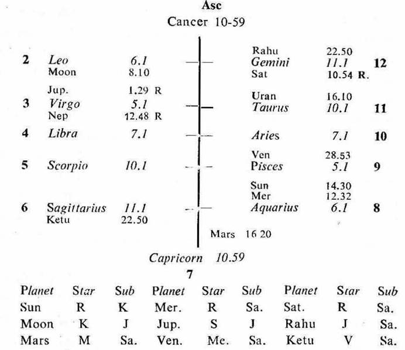

Female: Birth 26-2-1945 Monday, 5-0 P. M. I. S. T. (New); 22°N43′, 74° E 39′; Ayanamsa 22° 59′.

Asc. (a) The Asc. is jointly ruled by Moon, Saturn and Sun. Moon is the significator of 6 (sickness or disease–being in the Star Ketu in 6 which also represents Jupiter owing 6). The starlord of the Asc. is Saturn which owns 8. It denotes long life. The sublord of the Asc. is Sun which owns 2. Hence life is long.
(b) The mental trend of the native is shown by the cuspal sublord of the Asc. which is Sun. Sun occupies 8 (suicide), it is in conj. with Mercury the chief governor of reason and the owner of 12 (self–undoing) and aspected by Moon the owner of the Asc. (self) and the chief governor of mind. This denotes self undoing nature and suicidal mentality.
(c) Sun the sub lord of the Asc. is in the star Rahu in 12 (representing Saturn owning 8 on the cusp of 12) and in the sub Ketu (representing the aspecting Saturn). Thus the sub lord of the Asc. is the significator of 8 and 12. So it denotes an accident.
8th Cusp. The sub lord of the 8th cusp is Moon. It owns the Asc. (self), it is in Leo (fiery sign), it is aspected by Mars (accident by burning or fire). Its star lord Ketu is in Sagittarius (fiery sign), it represents Saturn owning 8 on the 12th Cusp, Ketu denotes an accident by burning. Thus the sub lord of the 8th cusp is connected with 8 and 12; fiery sign and an accident by burning.
1. In this case the cuspal sub lord of the Asc. denotes suicidal mentality and an accident; while the cuspal sub lord of the 8th shows an accident by burning.
2. An accident generally happens during the joint period of the significators of 8 and 12. If the cuspal sub lord of the Asc, 8 or 12; or if the cuspal joint rulers of any of these houses be the significators of 8 and 12, the accident occurs during their joint period.
In cases of sickness, disease, serious injuries or accident the joint period ruler or rulers form an evil aspect by Square or opposition to the Asc; or forms sextile or trine to the 6th, 8th or 12th cusp; or to the owner of 6, 8 or 12; or to the planet in 6, 8 or 12.
3. In this case Sun and Mercury are in the star Rahu in 12 (representing Saturn owning 8). They are the significators of 8 and 12. Mars is in the sub Saturn owning 8 and on the cusp of the 12th, so it is also the significator of 8 and 12. (Mars is in the star Moon which is aspected by the significators of 8 and 12 i.e. Sun, Mercury and Saturn, hence Mars is the strongest significator of 8 and 12).
Sun and Mercury are in trine both to the 12th cusp and Saturn owning 8. Mars is in opposition to the Asc.. Sun, Mercury and Mars are aspecting the owner of the Asc. and the cuspal sub lord of 8 (Moon).
4. Hence an accident will occur during the joint period of Sun, Mercury and Mars.
This native was born during the period of Ketu with balance of 2Y 8M 17D. The joint period of Sun and Mercury will start from 1-9-1971.
In this case the native attempted to commit suicide. So the accident occurred during the joint period of Sun, Mercury and Sun (Sun is the sub lord of the Asc. and it denotes the native herself and her own initiation) which commenced from 23-12-1971. As she burnt herself the accident happened in the Sookshma period of Mars (the star lord of the 8th cusp) which commenced on 25-12-1971. Hence she attempted to commit suicide by pouring kerosene over her body and she suffered severe burns during the joint period of Sun, Mercury, Sun and Mars on 25-12-1971 Saturday at 9-15 p.m. I.S.T.
At that time Sun was transitting in Sagittarius 9° 51′ the fiery sign through the 6th house; Moon in Pisces 17° 42′ in the star Mercury (the sub period ruler); Mercury in Scorpio 19° 12′ in its own star. Thus the transit agreed with the joint period ruler at the time of the event.
In this case Ketu is the sub lord of the period–inter period ruler Sun, it represents Jupiter (being in Sagittarius) which aspects the 11th cusp (recovery), it also represents Venus (its star lord) the owner of 11. The sookshma period ruler Mars owns 5 (recovery), it is in trine to the 11th cusp and sextile to the 5th cusp. So the native could recover from serious injuries and her life was saved, because the Asc. promises long life as already discussed,